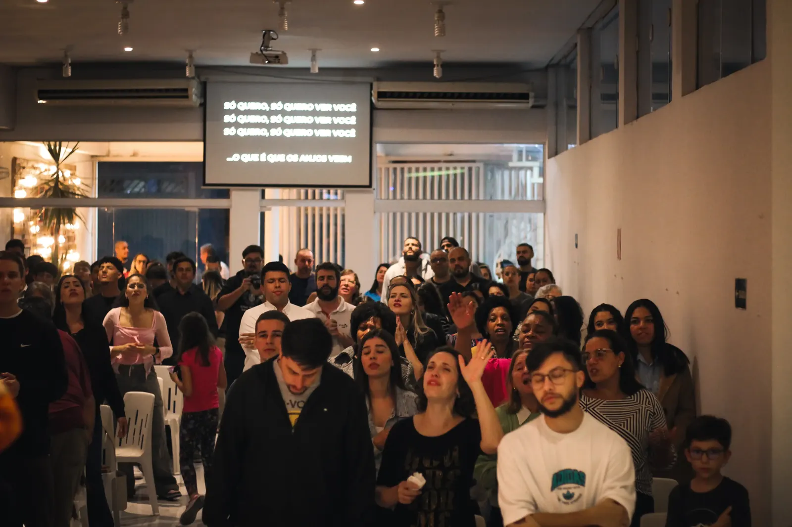
QUEM SOMOS
Uma comunidade evangélica que cresce junta em Araçariguama
A IEJB (Igreja Evangélica do Jardim Brasil) nasceu em 2013 em Araçariguama, SP, fundada pelo Pastor Luiz Roiz com uma visão clara: ser uma igreja família de verdade, não só no domingo. Aqui o princípio é o discipulado, vida na vida. Acreditamos que fé se vive junto, no dia a dia, nos relacionamentos reais. Por isso desde o começo nos preocupamos em ser um espaço acolhedor, onde todo mundo encontra seu lugar, seja dando os primeiros passos na fé ou querendo ir mais fundo.
-
Graça que transforma
Acreditamos que toda pessoa merece uma nova chance.
-
Comunidade real
Relacionamentos autênticos que vão além do domingo.
-
Palavra que fala
Ensinamentos práticos para o dia a dia.
NOSSA HISTÓRIA
Uma família que cresce junta
13 anos de história
-
2013
O começo
A IEJB nasce em Araçariguama, fundada pelo Pastor Luiz Roiz, com a visão de ser uma igreja família de verdade, não só no domingo.
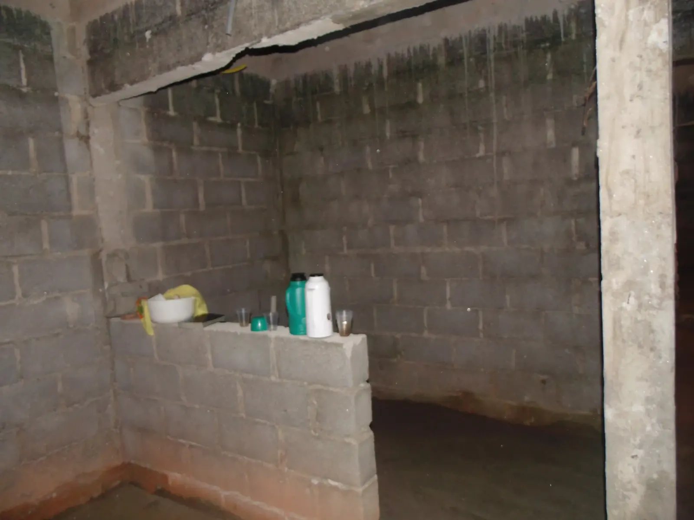
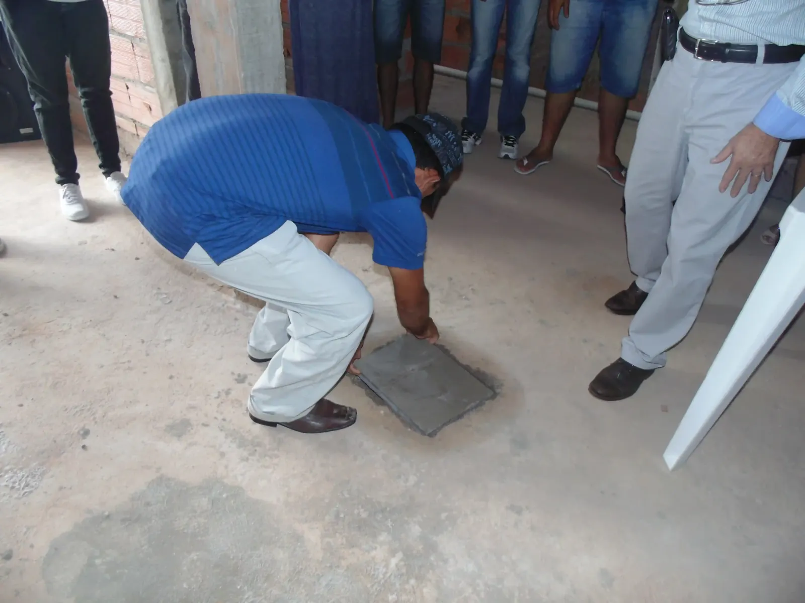
-
Vida na vida
Desde o início, o princípio é o discipulado: a fé vivida junto, no dia a dia, em relacionamentos reais.
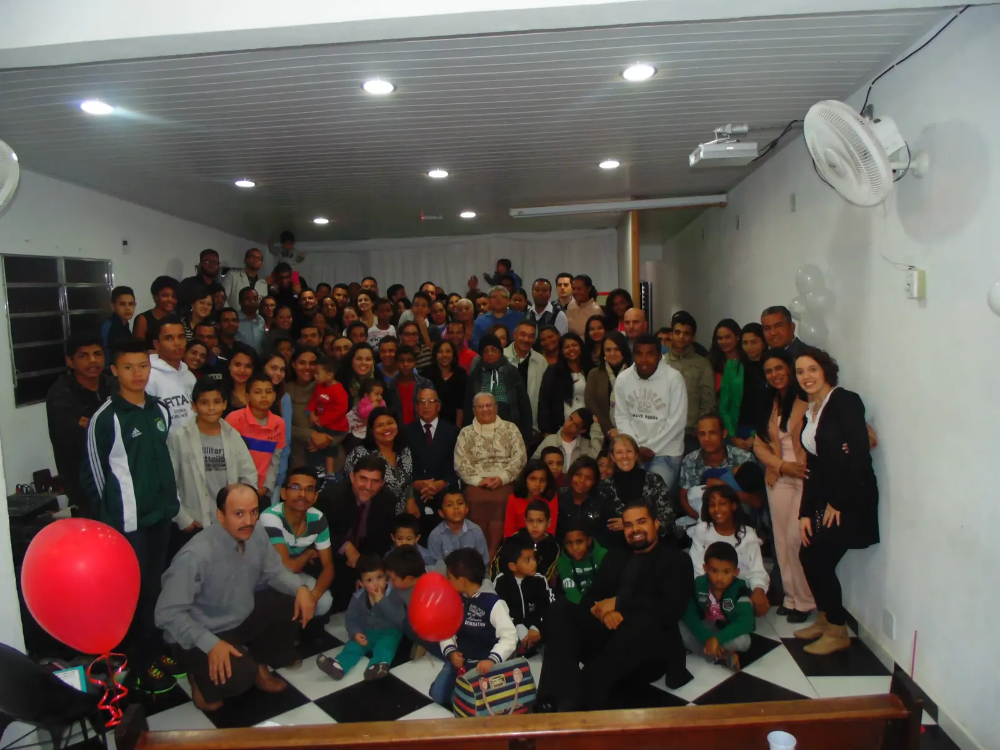
-
Hoje
Uma comunidade com ministérios de louvor, evangelismo, infantil, jovens e dança, de portas abertas para você.
Ver a galeria completa
PROGRAMAÇÃO DE CULTOS
Nossos cultos em Araçariguama
Cultos todo domingo e toda terça-feira no Jardim Brasil, em Araçariguama-SP. Venha como você é.
Domingo
EBD
Escola Bíblica Dominical: aprendizado bíblico e comunhão nas manhãs de domingo. Sua escola perfeita da Palavra de Deus.
Domingo
Culto da Família
Culto de adoração: adore a Deus com sua família. Venha como você é!
Terça-feira
Culto de Oração
A adoração continua na semana: venha adorar a Jesus nas terças-feiras conosco.
PLANEJE SUA VISITA
Sua primeira vez em 3 toques
GALERIA
Nossa História em Imagens
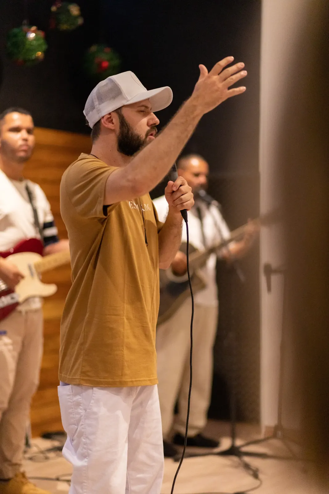
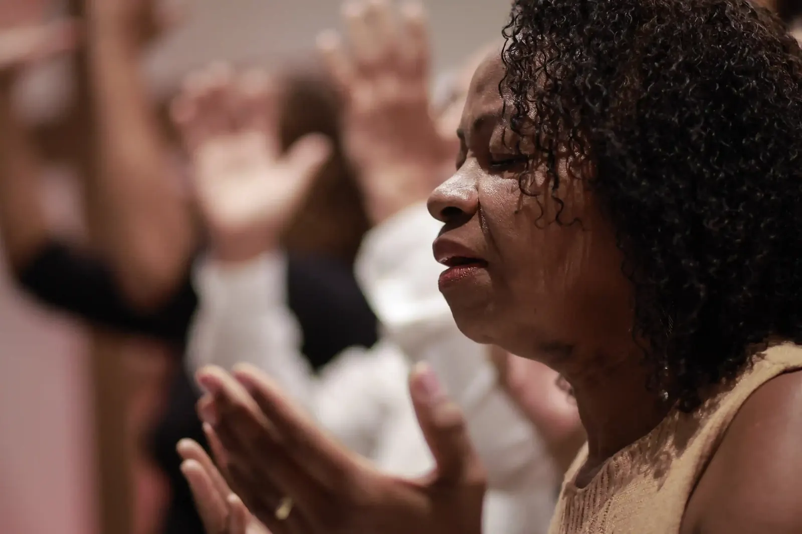
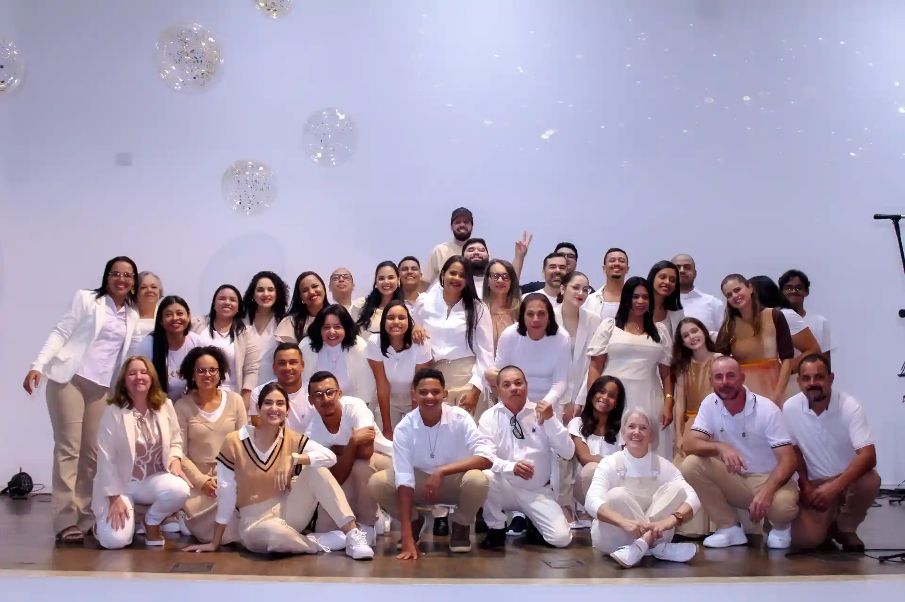
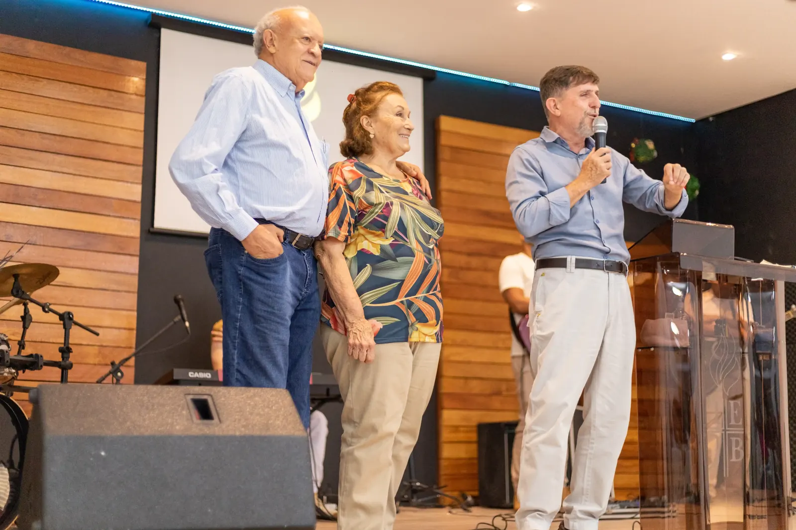
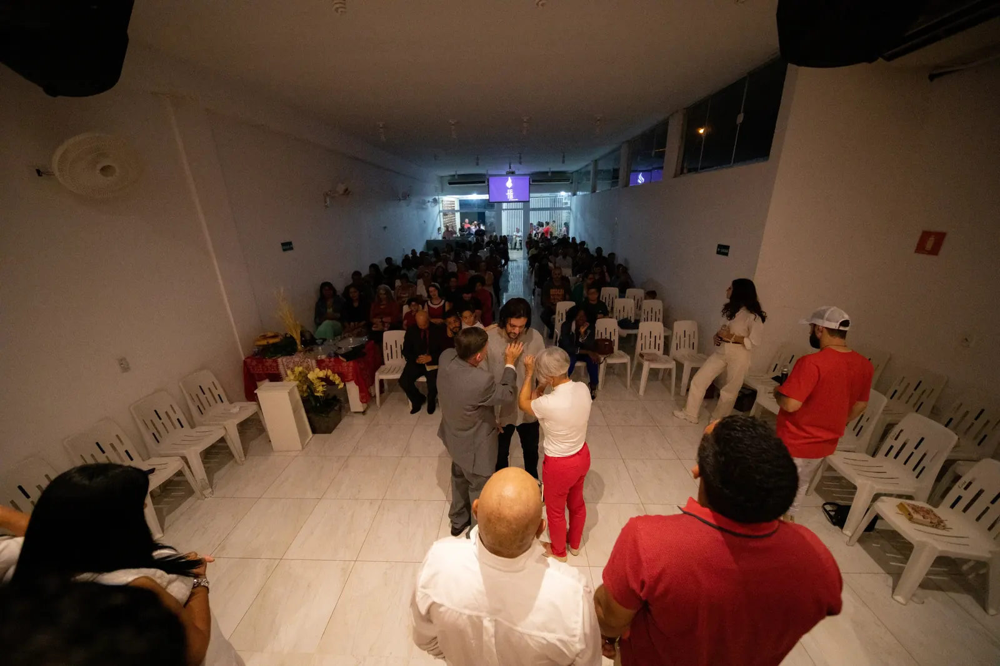
MINISTÉRIOS
Nossa comunidade ativa
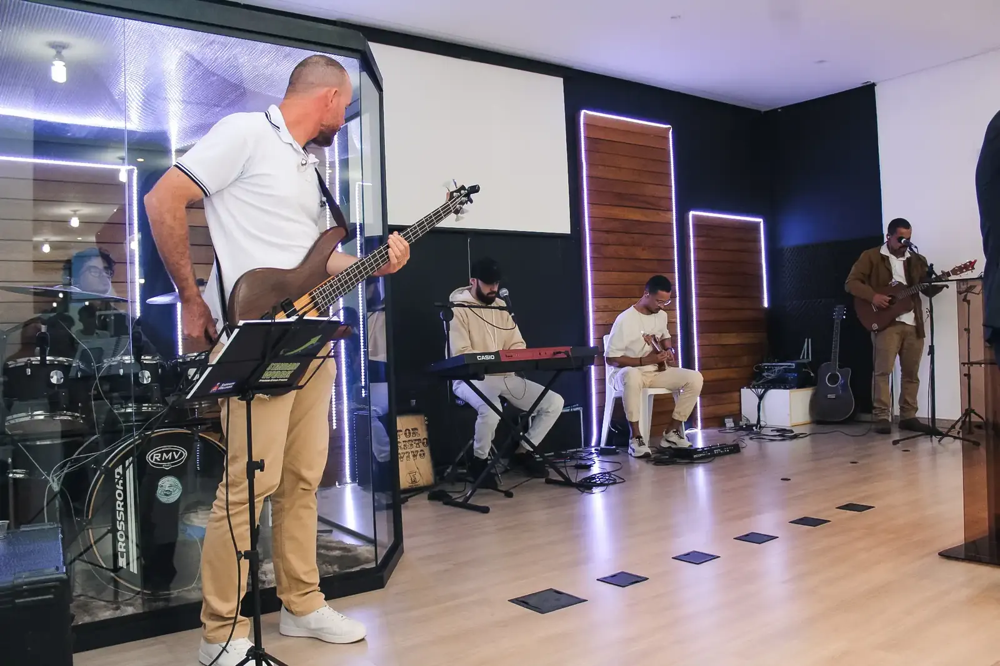
Louvor
Se você tem um dom musical, venha adorar conosco e usar seu talento para glorificar a Deus. O louvor é o coração da nossa comunidade.
Evangelismo
Participe de ações sociais e eventos evangelísticos para levar a mensagem de esperança a mais pessoas em Araçariguama.
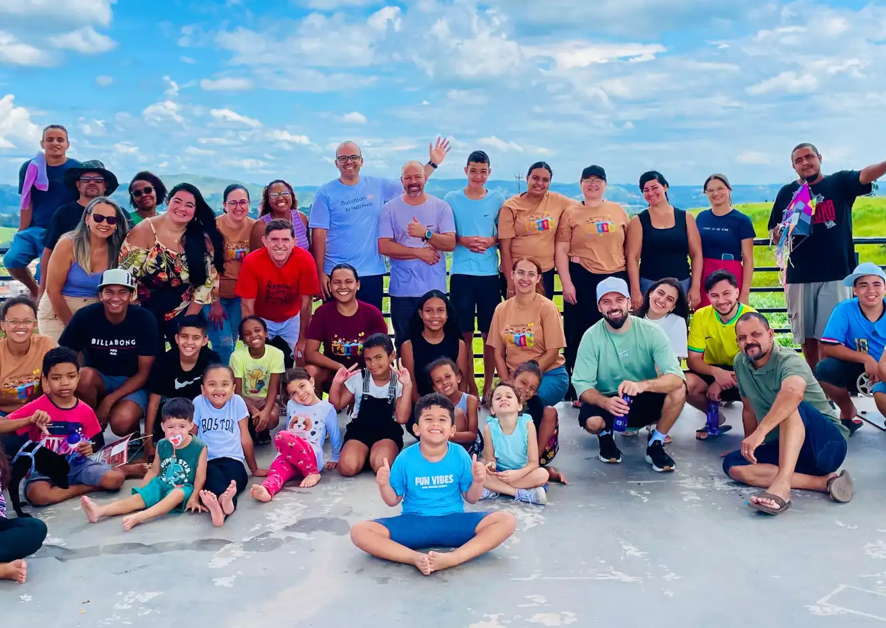
Infantil
Ajude a formar a próxima geração, ensinando as crianças sobre o amor de Deus de maneira divertida e criativa.
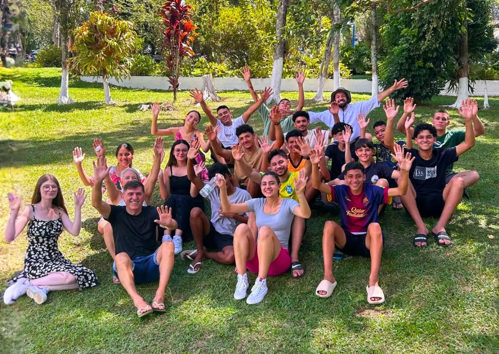
Jovens e Adolescentes
Participe de atividades especiais para jovens, promovendo a comunhão e o crescimento espiritual em um ambiente acolhedor.
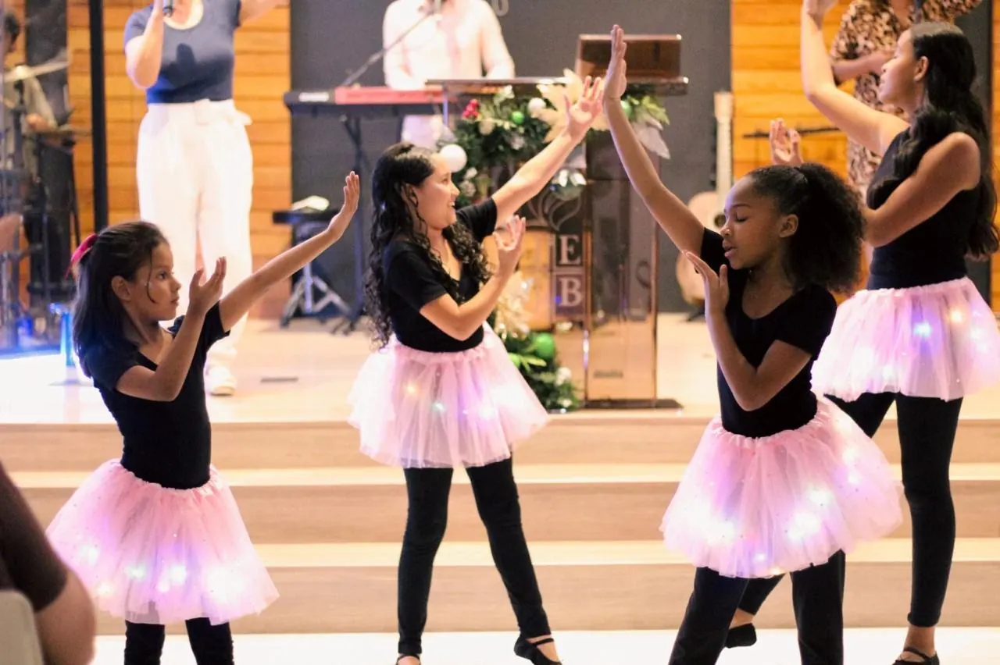
Dança
Se você ama dançar, venha expressar seu amor por Deus. O ministério de dança é uma forma de adoração espontânea!
QUIZ RÁPIDO
Qual ministério combina com você?
HISTÓRIAS REAIS
O que as pessoas dizem sobre a IEJB
"Para mim, a IEJB significa ser uma vida a oferecer, para o Propósito Divino"
— Miriam
"A IEJB é uma igreja acolhedora e familiar. Aprendemos a Palavra de Deus e encontramos apoio para crescer na fé."
— Alessandra
"A IEJB é mais que uma igreja para mim, é uma família de fé. Aqui cresço espiritualmente e fortaleço minha caminhada com Deus."
— Maria
AGENDA
Próximos eventos da IEJB
Em breve novos eventos por aqui. Acompanhe as novidades no nosso Instagram.
19
Setembro
Sábado
Culto de Jovens
Incendeia
Prepare o coração e venha viver uma noite de louvor, adoração e muita presença de Deus. Você não vai querer ficar de fora!
19h30
IEJB - Araçariguama
17
Outubro
Sábado
Infantil
Noite da Pizza Kids
Uma noite deliciosa preparada com muito carinho para as crianças! Venha aproveitar muita pizza, brincadeiras divertidas e aprender mais sobre o amor de Deus conosco.
18h00
IEJB - Araçariguama
26
Setembro
Sábado
Faça o Ide
Evangelismo
E se hoje você pudesse ser resposta na vida de alguém? Venha com a gente levar esperança, amor e a mensagem de Cristo para quem precisa ouvir.
17h00
IEJB - Araçariguama
09
Outubro
Sexta-feira
ACAMPAMENTO CULTURA 24/7
Acampa de Jovens
Um tempo separado pra sair da rotina, fortalecer a fé e criar conexões de verdade. Nosso Acampa de Jovens vai ser um momento único de comunhão, palavra, louvor e muita troca entre a galera.
Horário a conversar
Espaço Liboredo - São Roque
COMO É UM CULTO
O que esperar na sua primeira visita
-
Chegada e acolhimento
Venha como você é. Avise que é sua primeira vez e vamos te receber e mostrar tudo por aqui.
-
Louvor e adoração
Um tempo de adoração para viver com a família. O louvor é o coração da nossa comunidade.
-
Palavra para o dia a dia
Ensinamentos práticos, que ajudam na vida real e não só no domingo.
-
Comunhão no pátio
Depois do culto, o pátio vira um espaço de conversa e conexão. É o melhor momento para conhecer pessoas e se sentir em casa.
Primeira vez em uma igreja evangélica?
É simples começar na IEJB
Sabemos que entrar em uma nova comunidade pode ser intimidador. Por isso
tornamos tudo muito tranquilo aqui em Araçariguama.
Faça parte da IEJB — a melhor Igreja
Evangélica de Araçariguama!
-
Venha como você é
Sem dress code, sem julgamento. Traje casual está mais do que ok.
-
Nos diga que é sua primeira vez
Vamos te acolher e mostrar tudo por aqui.
-
Fique um pouco mais
Após o culto, o pátio vira um espaço de conversa e conexão. É o melhor momento pra conhecer pessoas e se sentir em casa.
Tem dúvidas?
Entre em contato conosco pelo Instagram ou E-mail. Estamos aqui para ajudar!
Fale Conosco Envie um E-mailCONVIDE ALGUÉM
Traga alguém para vir com você
Já faz parte da IEJB? Escolha o culto e mande o convite pelo WhatsApp, pelas redes ou como imagem para os Stories.
DÚVIDAS FREQUENTES
O que visitantes costumam perguntar
Preciso me vestir de algum jeito?
Não. Venha como você é: sem dress code e sem julgamento. Traje casual está mais do que ok.
É minha primeira vez, como funciona?
Avise que é sua primeira vez e vamos te acolher e mostrar tudo por aqui. Depois do culto, o pátio vira um espaço de conversa e conexão.
Tem algo para as crianças?
Sim! Temos o Ministério Infantil e o Culto da Família, pensado para você adorar a Deus junto com os seus.
Quais são os dias e horários dos cultos?
Domingo às 9h (Escola Bíblica Dominical) e às 18h (Culto da Família); terça-feira às 19h30 (Culto de Oração), na Rua Ceará, 128 - Jardim Brasil, Araçariguama-SP. Veja os detalhes na seção Cultos.
Onde fica a igreja?
Rua Ceará, 128 - Jardim Brasil, Araçariguama - SP, CEP 18147-000, próximo ao Araçarizão. Veja o mapa na seção Onde estamos.
Como falo com a igreja?
Pelo nosso Instagram ou pelo e-mail contatoiejb@gmail.com.
ONDE ESTAMOS
Venha nos visitar
Endereço
Rua Ceará, 128 - Jardim BrasilAraçariguama - SP, 18147-000
Próximo ao Araçarizão
Horários
Domingo: EBD às 9h e Culto da Família às 18h
Terça-feira: Culto de Oração às 19h30